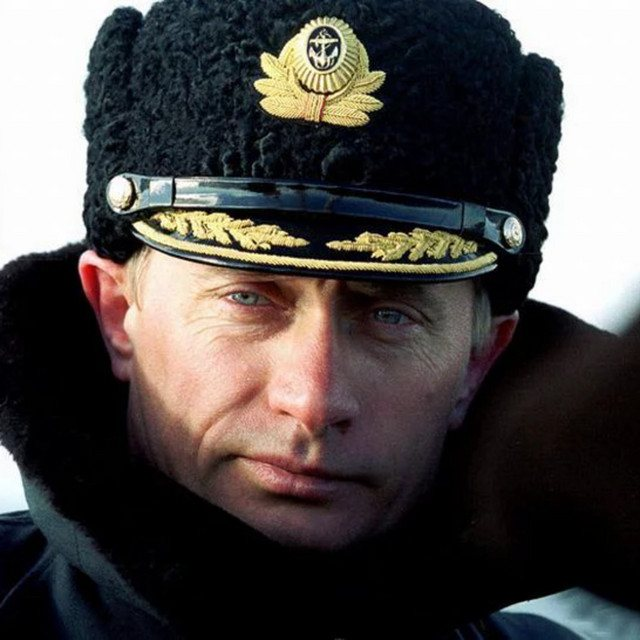

The Eclectic Polymath Podcast · Archive
#017 World Leaders: The Rise of Vladimir Putin

About this episode
Welcome back to The Eclectic Polymath Podcast, a curiosity driven deep dive show built around the questions that pull us in.
Vladimir Putin’s story begins in the ruins of the Soviet century and the chaos of post Soviet Russia, where economic collapse, political instability, oligarch power, and war created a national hunger for order.
This episode traces Putin’s rise from postwar Leningrad to the KGB, from the mayor’s office in St. Petersburg to Boris Yeltsin’s inner circle, and eventually to the presidency after Yeltsin’s New Year’s Eve resignation in 1999.
Key points
- Welcome back to The Eclectic Polymath Podcast, a curiosity driven deep dive show built around the questions that pull us in.
- Vladimir Putin’s story begins in the ruins of the Soviet century and the chaos of post Soviet Russia, where economic collapse, political instability, oligarch power, and war created a national hunger for order.
- Petersburg to Boris Yeltsin’s inner circle, and eventually to the presidency after Yeltsin’s New Year’s Eve resignation in 1999.
- We look at how Putin built his image as the man who could restore stability, discipline the oligarchs, control the media, centralize power, and reposition Russia as a great power on the world stage.
- From Chechnya and Crimea to Ukraine, sovereign democracy, nationalism, public approval, and the politics of fear, this is a story about how one leader turned the memory of collapse into a system of control.
More like this
 #128 The Oslo Accords: Israel, Palestine, and the Architecture of a Failed PeaceAugust 15, 202651:49
#128 The Oslo Accords: Israel, Palestine, and the Architecture of a Failed PeaceAugust 15, 202651:49 #129 The Yom Kippur War: Israel, Egypt, and the Shock That Changed the Middle EastAugust 15, 20261:03:35
#129 The Yom Kippur War: Israel, Egypt, and the Shock That Changed the Middle EastAugust 15, 20261:03:35 #123 Huey Long: Populism, Power, and the Making of an American AutocratAugust 13, 202656:37
#123 Huey Long: Populism, Power, and the Making of an American AutocratAugust 13, 202656:37 #124 The PATRIOT Act: 9/11, Surveillance, and the Expansion of American PowerAugust 13, 20261:06:19
#124 The PATRIOT Act: 9/11, Surveillance, and the Expansion of American PowerAugust 13, 20261:06:19